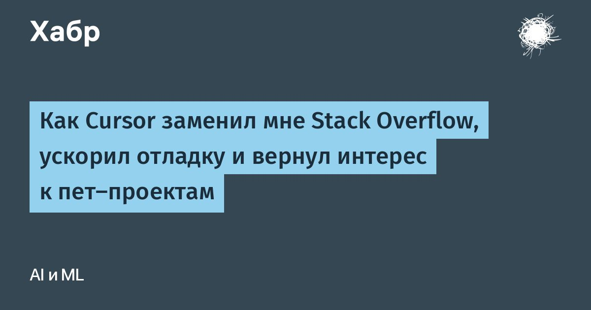

Как Cursor заменил мне Stack Overflow, ускорил отладку и вернул интерес к пет-проектам
В самом начале, когда начали появляться первые ИИ-агенты и плагины для IDE-шек, я думал: а, очередная новомодная фишка.
Надо будет как-нибудь посмотреть, когда время будет.
Тогда я еще не подозревал, насколько мощные эти инструменты, а ChatGPT и прочие генеративные нейросети воспринимал как «прикольную игрушку».В то время я искал решения на Stack Overflow, адаптировал и вставлял в код, вручную отлаживал.
Тогда ИИ для меня был просто нейросетями на Keras, которые еще надо обучать и которые годятся только для кредитного скоринга или подобных задач.
Читать далее